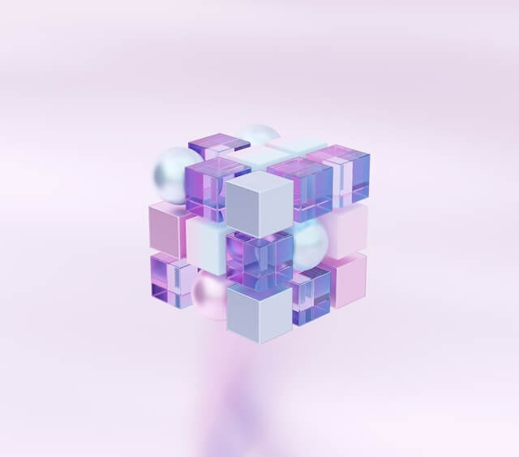

Home
Algorithms
Image Rotation
Color Correction
Image Scaling
Image Segmentation
Spline Interpolation
Retouching
Unsharp Masking
Bilinear/Trilinear Filtering
3D Cube Projection
Team
Repository
Updates
3D Cube Projection

Go to Advanced Version
>
Interactive Cube
1
6
2
5
3
4
Rotate X
Rotate Y
Rotate Z
Front Face Color:
Back Face Color:
Right Face Color:
Left Face Color:
Top Face Color:
Bottom Face Color:
Download Cube Image